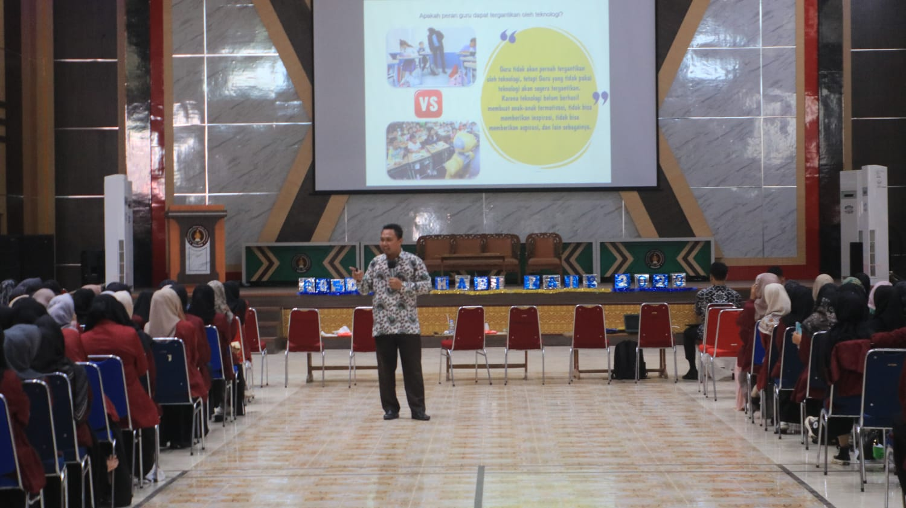

SEMINAR PGSD FKIP UNDHARI.
Pada tanggal 20 Mei 2023, Darajingga Convention Center menjadi saksi keberhasilan penyelenggaraan acara besar-besaran. Seminar pendidikan yang diselenggarakan oleh Program Studi Pendidikan Guru Sekolah Dasar (PGSD) Undhari berjalan lancar dan sukses. Dengan tema "Peluang dan Tantangan Mentransformasi Pendidikan dalam Menghadapi Era Society 5.0," seminar ini berhasil menyedot perhatian para pendidik dan penggiat pendidikan di kabupaten Dhamasraya. Acara dibuka dengan sambutan dari Bapak Dwi Novri Asmara, M.Si, selaku dekan FKIP Undhari, yang mengungkapkan pentingnya peran pendidikan dalam menghadapi perubahan zaman.
Tak hanya itu, kata sambutan kedua disampaikan oleh D.r Amar Salahhudin, M.Pd, yang mengapresiasi Himpunan Mahasiswa PGSD atas keberhasilan mereka dalam menyelenggarakan acara ini. Sambutan ini memperlihatkan rasa bangga dan penghargaan terhadap keberhasilan mahasiswa PGSD dalam mengorganisir kegiatan tersebut.
Acara ini turut dihadiri oleh Bapak Gunawan Ali, M.Kom, selaku rektor Universitas Dhamasraya. Beliau dengan hangat membuka acara tersebut dan menyampaikan harapannya terhadap semakin berkembangnya dunia pendidikan di kabupaten Dhamasraya
Seminar ini pun dilanjutkan dengan sesi pemateri oleh Trian Abadi Rahman, S.Pd. Dalam materinya, Trian membahas tentang implementasi merdeka belajar bagi para guru dan inovasi dalam meningkatkan mutu pendidikan di kabupaten Dhamasraya. Tak hanya itu, ia juga mengulas perubahan masyarakat sejak era Society 1.0 hingga Society 5.0, menggugah peserta seminar untuk beradaptasi dengan perubahan tersebut
Tidak kalah menarik, pemateri kedua Dr. Estuhono, M.Pd, membawakan topik menarik tentang kompetensi dan keterampilan abad 21 bagi para guru dalam menghadapi era Society 5.0. Dalam presentasinya, Dr. Estuhono menggarisbawahi pentingnya pengembangan diri dan kesiapan para pendidik dalam menghadapi perubahan zaman yang semakin cepat.
Dengan antusiasme yang tinggi, peserta seminar aktif berpartisipasi dalam diskusi dan tanya jawab yang menghidupkan suasana. Acara ini berhasil memberikan wawasan baru dan inspirasi bagi para pendidik di kabupaten Dhamasraya.
Seminar pendidikan PGSD FKIP Undhari ini membuktikan komitmen dalam meningkatkan kualitas pendidikan dan menghadapi perubahan yang terjadi di era Society 5.0. Harapannya, melalui acara seperti ini, dunia pendidikan di kabupaten Dhamasraya dapat terus berkembang.